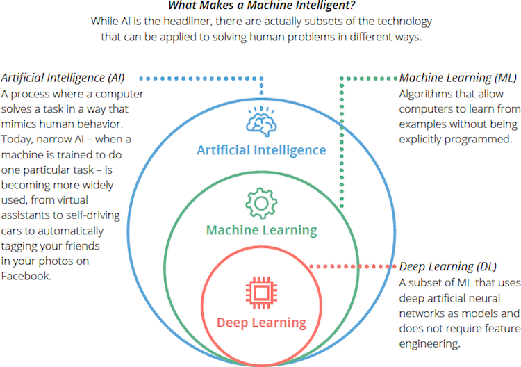

Introduction to AI and Neural Networks
What is Artificial Intelligence?
Artificial Intelligence (AI) refers to the simulation of human intelligence in machines that are programmed to think, learn, and solve problems. In business, AI helps automate tasks, analyze data, predict trends, and improve decision-making — leading to increased efficiency, cost savings, and innovation.
Types of AI
- Rule-Based Systems: These systems follow a predefined set of rules to make decisions. They’re simple and transparent but can’t adapt or learn from data.
- Machine Learning (ML): ML uses statistical techniques that allow computers to learn from data and improve their performance without being explicitly programmed.
- Deep Learning: A subset of ML, deep learning uses layered neural networks to process data and learn complex patterns — especially useful in tasks like image recognition or language translation.
Deep Learning Visual

Neural Networks and Transformers (Basic Overview)
Neural Networks are inspired by the structure of the human brain. They consist of layers of nodes (neurons) that process input data to recognize patterns and make predictions.
Transformers are a modern architecture used primarily in language models. They process input data (like text) all at once, rather than sequentially, allowing for faster and more accurate language understanding.
AI in Business: Real-World Examples
- Coca-Cola: Uses AI to analyze customer data, develop new products, monitor social media sentiment, and optimize vending machine pricing.
- UPS: Uses its ORION system to optimize delivery routes using machine learning, saving fuel and reducing emissions.
- JLL (Jones Lang LaSalle): Implements AI tools like JiLL, a digital assistant that helps brokers access property data and streamline real estate processes.
- Pfizer: Applies AI to accelerate drug discovery, analyze clinical data, and manage vaccine logistics.
- Spotify: Uses deep learning to recommend songs and curate playlists based on user behavior and preferences.
- Walmart: Uses AI in inventory management, customer behavior prediction, and store operations through computer vision.
What Are Large Language Models?
Large Language Models (LLMs) are a type of deep learning AI trained on massive text datasets to understand and generate human-like language. Examples include OpenAI’s GPT-4 and Google’s BERT. These models power chatbots, customer service tools, legal document analyzers, and marketing content generators. They are built on transformer architectures and use attention mechanisms to analyze context and meaning efficiently.
AI’s Role in Business Systems
Artificial intelligence is a modern and practical tool that is being used today to affect and transform business processes. From automating basic tasks to being able to inform high level strategy. AI is being embedded into the core of business systems and operations. Furthermore, looking at AI roles in businesses I will explore three main areas:
- How AI enhances efficiency, decision-making, and automation
- The most common and impactful business applications of AI
- Notable AI implementation failures — and the lessons we can learn from them
1. Enhancing Efficiency, Decision-Making, and Automation
Starting with the big idea of AI, one of AI’s most immediate impacts is improving efficiency across an organization. By allowing Ai to take over repetitive, manual tasks such as data entry, emails, and other mundane tasks it frees up employees to focus more on creative, high value, and analytical work. For example, Ai can automatically sort and categorize thousands of documents or potentially detect anomalies in data sets such as Finical reports/data that might've taken an employee hours to find and do. This example dramatically cuts down on turnaround time and improves workflow efficiency and cost factors for labor.
Beyond just increasing speed of processes, Ai can also improve decision making by analyzing massive amounts of data very quickly and unlike humans AI doesn’t get overwhelmed by volume. AI can analyze complex data sets such as sales trends, customer feedback, supply chain performance and extract patterns that humans might miss due to volume overload. The result of such processes therefore allows smarter, data-driven business decisions which increase a company's competitive advantages.
In regard to automation, Ai can handle entire workflows by itself. For example, a retailer might use AI to automate restocking decisions based on real time demand forecasts, vendor delivery times, and seasonal patterns. This would result in fewer overstock situations and stock outs, both of which would cause extra loss of revenue. Moreover, AI shouldn’t be about replacing human effort but rather enhancing it and allowing employees to work in more value driven sectors. Such as the name of some AI models, AI should be thought of as a Co-Pilot as it speeds things up, can allow fewer mistakes in regard to data volume, and provide more insights that help teams and management make better decisions.
2. Common AI Applications in Business
A. Data Analysis
AI is revolutionizing the way that companies analyze and interpret data. Traditional data analysis can take weeks and suffer from overwhelming volume on employees' part, but AI tools can take weeks, but AI tools can scan terabytes of data and generate insights in minutes. Companies like Netflix and Amazon for example are AI-Powered analytics to personalize recommendations in the application/website, track behavior patterns, and fine tune their content strategies based on real-time data.
Moreover, AI automates the data cleaning and preparation process as well as traditionally the most time-consuming part of analysis. This allows analysts to spend more time interpreting results rather than breaking down spreadsheets which align with the idea that AI enhances employees and doesn’t outright replace them.
B. Recruitment and Talent Management
As many of you know Uwec business classes teach of resume AI filters and how to catch the eyes of what of the AI might be looking for when creating a resume. Many HR’s used AI to shift through hundreds and maybe even thousands of resumes quickly. The AI powered platforms screen candidates based on predefined skills, experience, and even predict future performance based on behaviors indicated. Companies such as Unilever and Hilton have used AI even for pre-screening videos interviews, where the algorithms analyze not just the actual answers but also tone and body language. As well AI is also used to assist with internal mobility, helping current employees discover roles and projects within the organization that align with their goals and skills.
C. Customer Service
AI in customer service has become almost ubiquitous with many companies implementing them into their business processes. From chatbots on websites to voice assistants in call centers, AI can enable 24/7 support without the need for constant employee staffing allowing a cutdown in cost factor to support while also allowing more coverage. These systems can answer FAQ, resolve simple issues, and even escalate more complex tasks to human agents. This amplifies the time that human agents have when dealing with more complex problems while cutting down on the less complex support answers that they had to deal with. For example, Companies like H&M and Bank of America use AI-powered customer agents to handle thousands of inquiries per day, reducing response times while still maintaining a personalized experience.
D. Process Optimization
AI is also used a lot in streamlining business processes across multiple departments, for example, in logistics AI can optimize delivery routes by looking into weather, traffic, and fuel costs in real time. The key in AI optimizing logistics is consistent and clean data and when provided with such AI can give you accurate and manful data in a multitude of sectors. Furthermore, some more example would be using AI to detect fraud by identifying suspicious transaction patterns before they escalate. Another popular usage would be supply chain optimization and balancing inventory, minimizing waste, and improving just-in-time delivery through predictive modeling.
3. Case Studies and Lessons from AI Failures
IBM Watson for Oncology
IBM set out to do something remarkable — use its mighty Watson AI to help doctors fight cancer. The vision was lofty: feed Watson vast quantities of medical data so that it would be able to recommend the best treatment protocols for patients, customized to their specific case.
But reality fell short of the hype. Instead of offering life-saving tips, Watson would often offer tips that were inappropriate or even dangerous. So, what went wrong?
Essentially, Watson was learned on a tiny, idealized dataset — theoretical cases from a handful of hospitals. It wasn't exposed to the messy, complicated data that real patients present with daily. With not enough experience in the real world, Watson's recommendations were often off-base.
After years of investment, IBM began quietly phasing out the program in 2023. The big lesson here? AI is no smarter than data that we feed it into — and in life-or-death applications like healthcare, there's no substitute for real-world nuance.
Zillow Offers
Zillow thought it had cracked the code on house flipping. It developed Zillow Offers, a scheme that used artificial intelligence to estimate house values and decide which houses to buy, renovate, and sell. It looked promising to start — lean, data-driven, and scalable.
But the housing market is not always so neat. During the COVID-19 pandemic, housing prices went crazy, and the AI models could not keep up. Zillow ended up overpaying for homes that it could not sell at a profit. Within months, the program collapsed, and over 2,000 employees lost their jobs.
The takeout of the story is balanced. AI is powerful, but it does not have common sense — it does not understand market sentiment, local quirks, or policy surprises. Human judgment still has a place, especially when millions of dollars are involved.
Energy Projects in the Gulf
In the Gulf, that is in the GCC states, many major energy projects attempted to integrate AI — and the results were less than desirable. Companies laid out enormous sums for AI software without initially securing that data was ready or whether there was a clear business rationale for technology.
The result? Overruns, delays, and under-used or ineffective systems.
These are classic examples of a classic trap: innovating with AI for its own sake, rather than starting with a clearly defined goal. AI is not a silver bullet — it needs good data foundations, business alignment, and a well-defined notion of what the problem AI is solving.
Implementing AI Effectively
Deploy: Setting the Foundation for AI Implementation
i. Defining Business Objectives
In order to adopt AI successfully, the first and most important step to focus on should be defining clear business objectives. According to Harvard Business School’s AI Business Strategy guide, many companies rush into AI projects without fully understanding what problems they are trying to solve rather than coming in with a clear goal of what they are trying to improve. AI should be treated as a tool rather than a magic bullet that can improve any scenario.
Businesses should first ask "What’s the goal?" For example, is it to improve customer service, reduce costs, increase productivity, or enhance data analysis? Each of these goals leads to vastly different AI implementation strategies.
A useful tool here is the AI-First Scorecard, a strategic framework that helps organizations evaluate their readiness for AI by assessing areas like:
- Data quality
- Infrastructure
- Strategic alignment
- Internal talent
When AI implementation projects have a clear direction and measurable success criteria, they are far more likely to deliver a positive impact.
ii. Evaluating Existing Capabilities
Once business objectives are defined, the next step is to evaluate the company's current infrastructure and capabilities.
One of the most common reasons AI projects fail is underestimating the importance of clean and structured data. If data is inconsistent or incomplete, AI models won’t work nearly as efficiently compared to well-organized, high-quality data.
Additionally, businesses must ensure they have the necessary expertise to interpret AI’s output. Whether by hiring AI developers, data scientists, or third-party specialists, organizations that build a data-driven culture and strong data governance are far more successful in adopting AI.
Integrate: Testing AI in Real-World Applications
iii. Integrating Pilot Projects
Once objectives are defined and capabilities are assessed, the next step is to launch pilot projects. A pilot project is a small-scale initiative designed to test an AI solution’s effectiveness in a controlled, real-world environment without the financial risk of full deployment.
Pilot projects allow businesses to:
- Test AI implementation on a small scale
- Validate assumptions and assess outcomes
- Build confidence among stakeholders before full deployment
For example, CBRE (Coldwell Banker Richard Ellis), one of the world’s largest commercial real estate and investment firms, successfully used AI pilot projects to optimize facility management across its global operations. Specifically, CBRE deployed AI tools to monitor:
- HVAC systems
- Lighting controls
- Energy consumption in office buildings
In one pilot project, AI was used to predict equipment failures before they occurred. The AI analyzed sensor data in real-time, allowing building managers to address maintenance issues proactively. As a result, CBRE achieved:
- Reduced downtime
- Improved operational efficiency
- Significant cost savings
The key takeaway from pilot projects is that they should be targeted, measurable, and aligned with the broader business strategy. If successful, they can be scaled up further; if not, they provide valuable insights without major losses.
Propagate: Scaling AI Adoption Across the Business
iv. Leveraging External Expertise
AI technology evolves rapidly, and companies need both in-house expertise and external resources to keep up. Organizations without AI-specialized teams often partner with:
- Third-party vendors offering AI solutions
- Academic institutions collaborating on AI research
- Consulting firms that provide implementation guidance
According to Harvard Business School’s Building an AI Business Strategy: A Beginner’s Guide, partnerships help businesses avoid common AI pitfalls such as:
- Misaligned models
- Bias in training data
- Regulatory compliance gaps
By leveraging external expertise, businesses can build scalable AI models, select the right tools, and train their teams to work effectively with AI.
v. Video: A Simplified Approach to AI Implementation in Small Businesses
Ethical AI and Workforce Impact
Artificial Intelligence has dramatically reshaped the workforce, igniting debates over whether AI leads to mass job displacement or serves as a tool to augment human potential. The truth lies somewhere in between. While AI can automate routine or repetitive tasks, it also enables humans to focus on higher-level strategic thinking, creativity, and interpersonal communication—skills machines still struggle to replicate effectively.
In sectors like manufacturing, customer service, and logistics, automation powered by AI has replaced some human labor. For instance, warehouse robots powered by computer vision and pathfinding algorithms now handle tasks that previously required manual input. AI-driven chatbots are handling basic customer inquiries, reducing the need for entry-level service agents. However, these tools do not eliminate the human workforce altogether; they shift the nature of work. In many cases, humans are still needed to manage, fine-tune, and supervise these systems.
One example of this augmentation model is seen in healthcare. AI is being used to scan medical images and assist with diagnoses, but human doctors are still the ultimate decision-makers. Rather than replacing radiologists, AI provides them with an advanced toolset to improve accuracy and efficiency. This same principle is being applied across marketing, cybersecurity, and education—where AI enhances human capability instead of replacing it.
The emergence of generative AI tools like ChatGPT and Midjourney has raised new ethical considerations. Artists, writers, and designers now face questions about originality, authorship, and intellectual property. Additionally, the use of AI to generate synthetic images and deepfakes has created concern over misinformation and the erosion of public trust in media.
To address these impacts, upskilling and reskilling the workforce is essential. Organizations must invest in education and training programs that empower employees to work alongside AI systems rather than compete with them. Skills like data literacy, AI system management, prompt engineering, and digital communication are quickly becoming essential in the modern workplace. Governments and educational institutions also play a role in ensuring that curriculum evolves to reflect the AI-driven economy.
Furthermore, ethical frameworks must be established to guide AI development and deployment. Companies like Microsoft and IBM have adopted internal AI ethics boards and policies focusing on fairness, accountability, transparency, and privacy. These initiatives help ensure AI is designed with human values in mind. International organizations such as the OECD and UNESCO have published guidelines on trustworthy AI, promoting human-centric design and oversight.
On a broader societal level, it’s crucial to ensure that the benefits of AI are shared equitably. If left unchecked, AI could widen the gap between those with access to technology and those without. Disparities in training, job opportunities, and infrastructure can exacerbate existing inequalities. Ensuring inclusion in AI-related decision-making—from diverse hiring practices to community consultation—can help mitigate these risks.
Ultimately, ethical AI is not just about preventing harm; it’s about proactively shaping a future where technology supports human flourishing. As AI becomes increasingly embedded in daily life, its social impact will be just as significant as its technical capabilities.
Mini Activity: Are These Photos AI Generated or Real?
Technical Demo: How AI Works
This section demonstrates a real, functioning AI chatbot—showing how artificial intelligence can be embedded into a business website or application. The chatbot you’re interacting with is powered by a large language model and runs through a structured system of components, each contributing to its ability to understand language and generate human-like responses.
At the core of the chatbot is something called Natural Language Processing (NLP). NLP is a field within AI focused on enabling machines to understand and respond to human language. When you type a message, the chatbot uses NLP techniques to break down your input into tokens—smaller parts like words, phrases, and punctuation—and then analyzes the structure and intent behind your message.
Once your message is interpreted, the chatbot passes it to a pre-trained language model. In this case, we’re using an API like OpenAI’s GPT. These models have been trained on massive datasets of internet text to learn grammar, reasoning, and even subtle nuances in tone and meaning.
The chatbot connects to this intelligence using an API—a bridge between your frontend and the AI model. It sends the user’s message, retrieves a response from the model, and displays the reply in real time.
On the backend, the chatbot structure includes:
- A frontend (HTML/CSS/JS chat UI)
- A backend service (like Vercel or Node.js) to send secure requests
- An API call to OpenAI’s model
- A return path to display the AI-generated response
This live demo shows how the chatbot can understand, respond, and adapt to various inputs. While it doesn’t learn from conversations individually, it is part of a system constantly being improved with new updates and broader training data.
Go ahead and try it out, ask any question you want. Make sure the questions are relevant to the topic of implementing AI in business.
Future of AI in Business & Q&A
1. Autonomous Decision-Making
Currently we're moving to a future where AI won’t only recommend actions but will go about taking them. This is what autonomous decision-making is and will appear more in the future when it comes to artificial intelligence applications. AI systems can and will predict inventory shortages but also automatically place orders, reroute deliveries, and update your suppliers all without human involvement.
Industries such as finance, logistics, and manufacturing have already started exploring this concept. Self-optimizing systems can manage complex tasks faster and more efficiently than teams of people, especially with larger data sets or when changes happen too frequently for employees to keep track of.
But with this new AI power, it will also raise new challenges to the business landscape, such as trust. Businesses will need to build transparency and ethical safeguards to ensure this decision is aligned with their goals and customer values.
2. Predictive Analytics Becoming Proactive
Predictive analytics is certainly not new, but it’s evolving very rapidly. In the past, predictive models helped us answer questions such as, “What’s likely to happen next?” But now we’re entering a new era where it doesn’t just predict but also prevents.
A great example of this currently in use would be predictive maintenance in aviation. An AI system can now detect subtle patterns in engine data that it outputs that suggests a part will fail in the next few days. Instead of reacting to breakdowns, AI/airlines can be proactive and make preemptive repairs, improving safety and saving millions.
In the future, we will see this expand into HR, healthcare, marketing, and even cybersecurity. AI will alert teams to potential risks or opportunities before they happen and, in many cases, be proactive and take early initiatives to address them.
3. AI-Driven Personalization at Scale
As well, as a consumer in the US, you’ve most likely seen the rise and implementation of AI-powered personalization. Companies such as Netflix, Spotify, and Amazon already personalize your experience based on behavior. But that would just be the beginning.
In the future, personalization will go far beyond just recommendations of movies and products. AI will tailor entire digital experiences such as websites, emails, and support chats in real time based on the data on your preferences.
This trend isn’t just limited to big tech either; AI personalization is becoming accessible to mid-size and even small businesses through all-encompassing platforms that can plug directly into websites or customer service systems.
For example, in e-commerce, AI will not only personalize product suggestions but will also adjust pricing, delivery options, and even marketing language, all uniquely tailored for each user. That type of personalization and tailoring would have taken weeks of work by marketing teams. Now with these options that are available much more quickly.
The Long-Term Impact of AI on Business
We’re moving in a direction where AI will no longer be a support tool but a core driver of business strategy. Leaders in the future will not ask, “How can we use AI in our operations?” They’ll ask, “What can we only do because we have AI?”
This reflects an ongoing strategic shift in how businesses will approach AI. Instead of merely integrating AI into an existing process, leaders will explore entirely new opportunities that AI uniquely enables, such as personalized tailoring on a massive scale and more. For example, Uber and Airbnb—these platforms couldn’t exist without real-time data and algorithms.
The future AI will unlock new kinds of service, new revenue streams, and new industries that we haven't thought of yet.
Although, with this growth will come strong ethical and responsibility duties. Companies will need to think deeply about data ethics, especially when it comes to tailoring as well as bias and transparency. Who’s accountable when an AI system makes a bad call? How do we ensure fairness in algorithms? These questions will become more urgent as AI becomes more central.
Any Questions?
Quiz
Please take the quiz in canvas.
References
- Forbes - How Coca-Cola Uses AI to Listen to Customers and Drive Innovation
- UPS - Inside ORION: How AI Is Revolutionizing Logistics
- JLL - JiLL Digital Assistant for Commercial Real Estate
- CNET - AI or Not AI: Can You Spot the Real Photos?
- Harvard Business School – Building an AI Business Strategy: A Beginner’s Guide
- Forbes Advisor – How Businesses Are Using Artificial Intelligence
- Forbes – AI Trends That Will Shape the Future of Business
- CBRE – The Role of AI in Workplace Technology: 10 Ways Companies Are Maximizing Its Impact
- Digital Transformation Skills – Implementing AI in Business Models: Strategies for Efficiency and Innovation
- PwC – The Essential Eight Technologies: Artificial Intelligence
- McKinsey & Company – The State of AI in 2023
- Henrico Dolfing – Case Study: IBM Watson for Oncology Failure
- CIO – 5 Famous Analytics and AI Disasters
- MATSH – Case Studies of AI Failure in GCC Energy Projects
- YouTube – Simplified AI Chatbot Use Case in Business